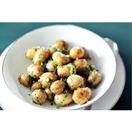

Ingrediënten:
- Aardappel
- Ui
- Kruidenboter
Bereiding:
- Snijd de aardappelen in blokjes en kook ze tot ze gaar zijn.
- Verhit kruidenboter in een pan en bak gesneden ui tot ze zacht zijn.
- Voeg de gekookte aardappelen toe aan de pan en bak kort mee.
- Breng op smaak met zout, peper en eventuele andere kruiden.
- Serveer de gekruide aardappelen warm.
